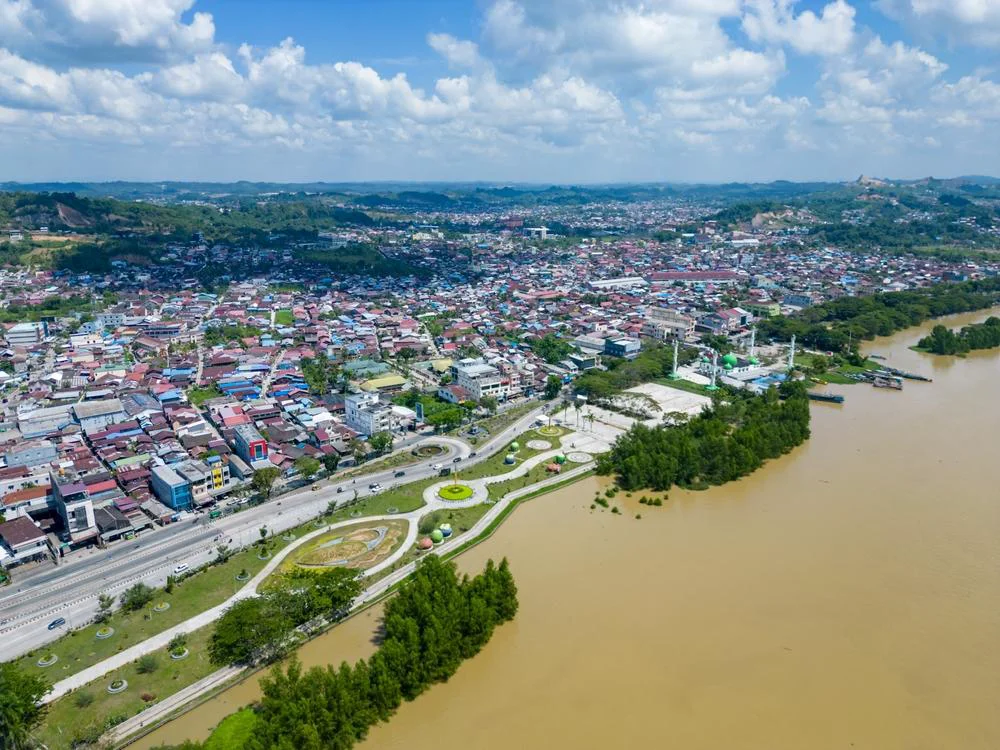

Samarinda merupakan ibu kota provinsi Kalimantan Timur, Indonesia. Kota
ini terletak di tepi Sungai Mahakam dan dikenal sebagai pusat
perdagangan kayu dan minyak bumi. Selain itu, Samarinda juga memiliki
keindahan alam yang menakjubkan, seperti hutan tropis, sungai yang
indah, dan berbagai taman nasional di sekitarnya. Kota ini juga memiliki
budaya yang kaya dengan berbagai tradisi lokal dan kuliner khas yang
menarik untuk dijelajahi.
Sejarah

Kota Samarinda
Kota ini didirikan pada abad ke-17 dan berkembang pesat selama masa
kolonial Belanda. Pada awalnya, Samarinda dikenal sebagai pusat
perdagangan kayu ulin yang sangat berharga. Seiring waktu, kota ini
juga menjadi pusat industri minyak bumi setelah ditemukannya
cadangan minyak di wilayah sekitarnya. Perkembangan ekonomi ini
membawa perubahan besar bagi masyarakat lokal dan menjadikan
Samarinda sebagai salah satu kota penting di Indonesia. Selain itu,
Samarinda juga memiliki peran penting dalam perjuangan kemerdekaan
Indonesia, dengan banyak tokoh lokal yang berkontribusi dalam
pergerakan nasional.
Sejarah Samarinda bermula pada abad ke-13 sebagai wilayah kekuasaan
Kerajaan Kutai Kartanegara, namun titik balik perkembangannya
terjadi pada 21 Januari 1668 ketika rombongan suku Bugis Wajo yang
dipimpin La Mohang Daeng Mangkona tiba dari Sulawesi untuk mencari
suaka pasca Perjanjian Bongaya. Atas izin Sultan Kutai, mereka
membangun permukiman di wilayah Samarinda Seberang dengan konsep
rumah rakit yang dibangun "sama rendah" di atas permukaan air
sungai, sebuah istilah yang melambangkan prinsip kesederajatan
antarwarga sekaligus menggambarkan kondisi geografis daratan yang
sejajar dengan permukaan air. Seiring berjalannya waktu, istilah
"sama rendah" tersebut berevolusi menjadi nama Samarinda, dan kota
ini bertransformasi dari pusat industri perkayuan atau "Emas Hijau"
menjadi ibu kota provinsi Kalimantan Timur yang kini berperan
strategis sebagai penyangga utama Ibu Kota Nusantara (IKN).
Geografi
Geografi Samarinda
Samarinda terletak di tepi Sungai Mahakam, yang merupakan sungai
terbesar di Kalimantan Timur. Kota ini dikelilingi oleh hutan tropis
yang lebat dan memiliki iklim tropis dengan suhu rata-rata sekitar
27 derajat Celsius. Wilayah Samarinda juga memiliki berbagai dataran
rendah dan perbukitan, serta beberapa danau dan rawa-rawa yang
menambah keindahan alamnya. Kota ini juga memiliki akses yang baik
ke laut melalui Pelabuhan Samarinda, yang memfasilitasi perdagangan
dan transportasi barang.
Secara administratif, Samarinda menempati posisi wilayah yang unik
karena statusnya sebagai enklave, di mana seluruh batas daratannya
bersinggungan langsung dengan Kabupaten Kutai Kartanegara tanpa
berbatasan dengan daerah lain. Dengan luas wilayah mencapai 718
kilometer persegi, kota ini terbagi menjadi beberapa zona topografi
yang bervariasi, mulai dari area pemukiman di dataran rendah hingga
kawasan perbukitan yang mendominasi sekitar 41,12% dari total luas
lahan. Kondisi elevasi kota ini cukup beragam, dengan titik terendah
berada tepat di permukaan laut hingga mencapai ketinggian 200 meter
di atas permukaan laut pada area perbukitannya. Sebagai kota yang
berada tepat di lintasan garis khatulistiwa, Samarinda memiliki
karakteristik iklim tropis basah yang sangat dipengaruhi oleh
pergerakan angin Muson, yang menyebabkan tingkat kelembapan udara
tetap tinggi serta curah hujan yang melimpah sepanjang musim.
Struktur hidrologinya pun sangat kompleks, di mana selain sungai
utama, terdapat jaringan anak sungai seperti Sungai Karang Mumus
yang mengalir membelah pusat keramaian dan menjadi bagian tak
terpisahkan dari tata ruang serta dinamika ekosistem perkotaan.
Budaya
Budaya Samarinda sangat dipengaruhi oleh berbagai suku bangsa yang
mendiami wilayah ini, termasuk suku Dayak, Banjar, Bugis, dan Kutai.
Kota ini dikenal dengan berbagai tradisi lokal, seperti tarian adat,
musik tradisional, dan upacara adat yang masih dilestarikan hingga
saat ini. Selain itu, kuliner khas Samarinda juga sangat beragam,
dengan hidangan seperti Soto Banjar, Nasi Kuning, dan Ikan Bakar
yang menjadi favorit bagi penduduk lokal maupun wisatawan. Festival
budaya juga sering diadakan di Samarinda untuk merayakan warisan
budaya dan seni lokal.
Kekayaan budaya dan kearifan lokal ini tidak hanya tercermin dalam
tradisi lisan atau hidangan, tetapi juga diabadikan secara visual
melalui berbagai monumen ikonik di sudut-sudut kota, seperti yang
tampak pada gambar berikut:
Patung Pesut Mahakam
Salah satu wujud nyata dari penghormatan terhadap identitas lokal
tersebut adalah Ikonografi Patung Pesut Mahakam. Keberadaan
monumen Pesut Mahakam di pusat kota merupakan simbol penghormatan
masyarakat terhadap fauna endemik yang menjadi penghuni asli urat
nadi kehidupan mereka, yaitu Sungai Mahakam.
Budaya mengidolakan pesut ini muncul karena hewan tersebut
dianggap sebagai "saudara" dalam mitologi lokal dan menjadi
penanda kesehatan ekosistem sungai yang telah menghidupi kota
selama berabad-abad. Melalui patung ini, masyarakat Samarinda
ingin melestarikan kesadaran kolektif mengenai pentingnya menjaga
keseimbangan antara pembangunan kota modern dengan perlindungan
kekayaan alam langka yang menjadi kebanggaan Kalimantan Timur.
.jpg)
.jpg)